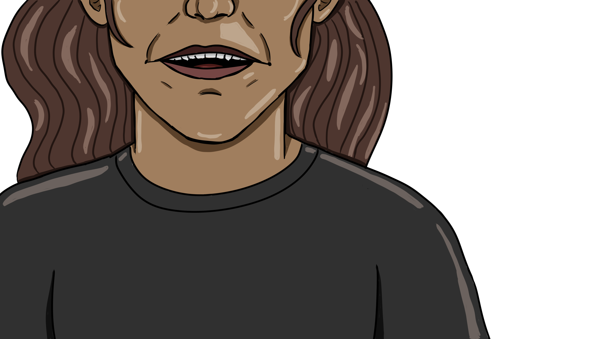
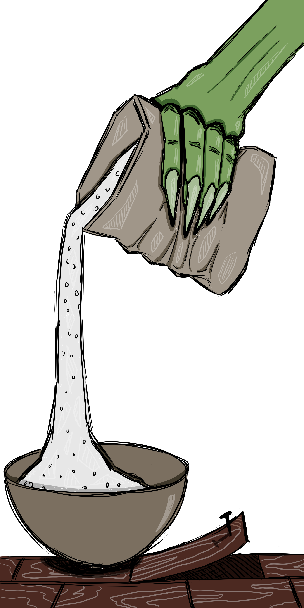

“What’s wrong, cariño? You haven’t touched your food.”
I scrunched my nose from the timbre of her voice.
It irked me, and I couldn’t place my finger on why.
I was supposed to be thankful that it was sweet, that they weren’t beating me up or starving me.
Instead, they were feeding me arroz con mole and smiling at me as if I were their daughter.
My finger landed on a reason for the irritation: her voice was sickly sweet.
I imagined an old witch’s fingers gripping a paper bag tightly, pouring heaps of sugar into a mixing bowl: simply another ingredient in the treats for Hansel and Gretel. In excess, sugar becomes a lure, forcing what was once sweet on the tongue into bitterness. People say you can never be too nice. But there’s a point in which you wonder if the kindness is genuine. If the nice words and gestures are all just part of a mask to obscure something rotting—a corpse beneath the floorboards. Sometimes I can peek underneath as the boards raise themselves, its constructed barebones nature made clear through the rusted nails becoming the teeth of a gaping mouth. Sometimes the facade falls apart on its own through contradiction.
